Stai cercando una leva strategica per il tuo business B2C o per il tuo portfolio di investimenti? Scegli il tuo percorso:
Connect the DOTS in Pratica
Scopri come i nostri Partner B2B trasformano la loro Value Proposition attraverso Ecosistemi AI personalizzati e percorsi NBD (Next Best Decision) L3.

Dal Fisco al Controllo di Gestione
Il Caso: Uno Studio di Consulenza cabla i propri clienti sull'app CtD per erogare una nuova Value Proposition direzionale.
La Soluzione: L'AI accompagna l'imprenditore passo dopo passo. Trasforma l'ansia per il calo dei margini in un percorso diagnostico, fino all'atterraggio nella Palestra dello SME per configurare un cruscotto predittivo.

Formazione e Sales Performance Adattiva
Il Caso: Una Boutique di Formazione converte i propri manuali statici in un "Coach Tascabile" sempre disponibile per la forza vendita.
La Soluzione: L'erogazione si adatta in tempo reale. Leggendo il Profilo locale, l'AI risolve lo stallo del venditore generando lo script di negoziazione perfetto in base al suo stile cognitivo.

Advisory 1-to-1 per lo Sviluppo del Talento
Il Caso: Un Executive Coach digitalizza il proprio framework metodologico per eliminare la dispersione tra le sessioni live.
La Soluzione: Il manager usa CtD per scaricare la frustrazione. Il motore diagnostico mappa il gap di leadership e instrada l'utente verso un task operativo di delega da completare prima dell'incontro.

Il "Walled Garden" per il Settore Benessere
Il Caso: Un Network di professionisti della salute crea un ecosistema condiviso per migliorare la fidelizzazione e automatizzare le referenze.
La Soluzione: Il paziente non viene abbandonato. L'AI analizza il sintomo, individua la causa posturale e genera immediatamente una CTA di cross-selling per un check-up dal partner fisioterapista.